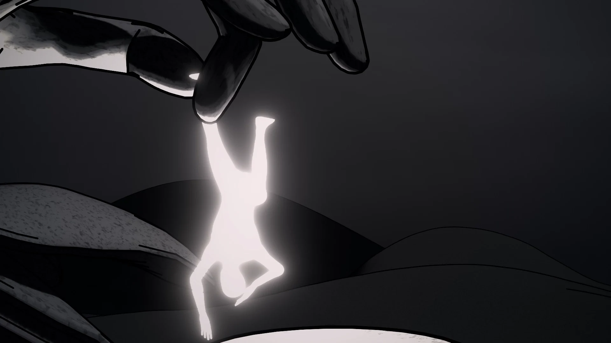
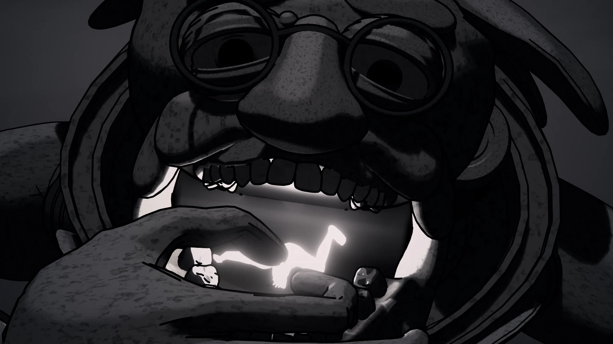
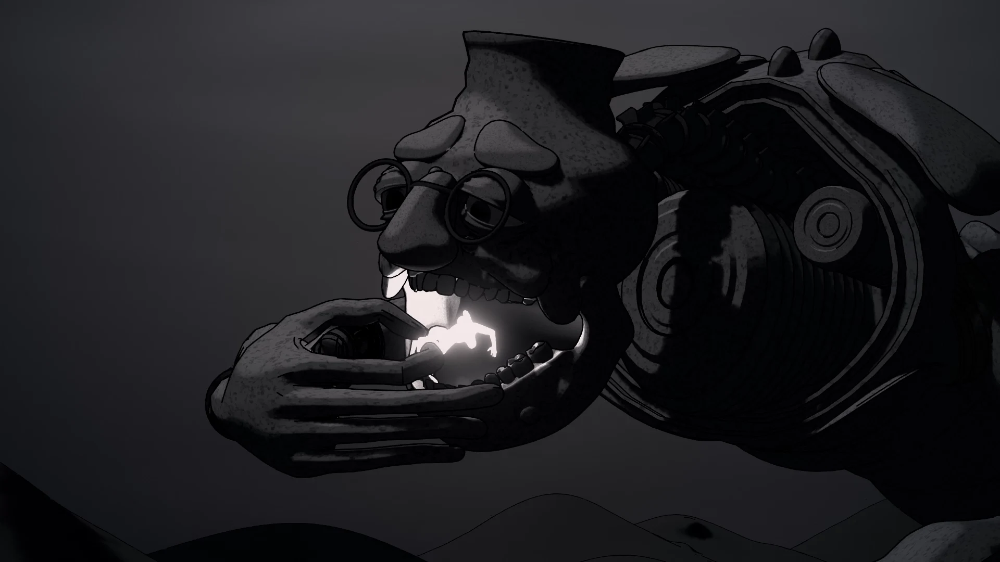
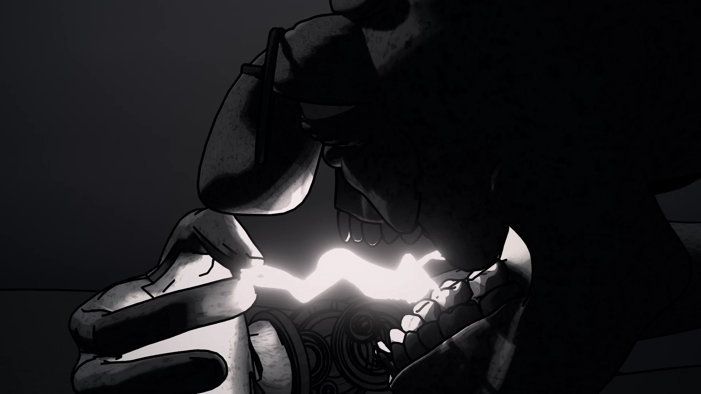
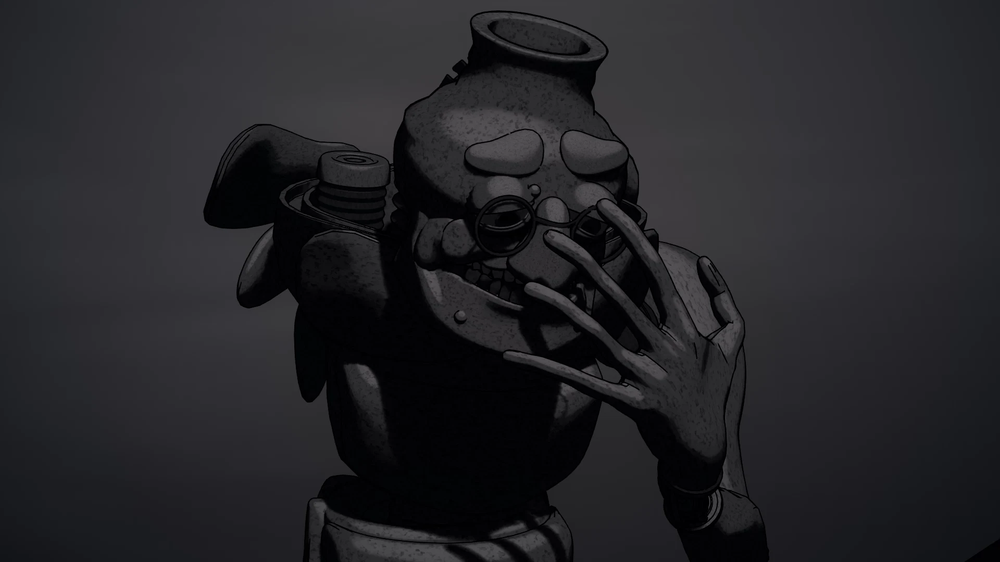
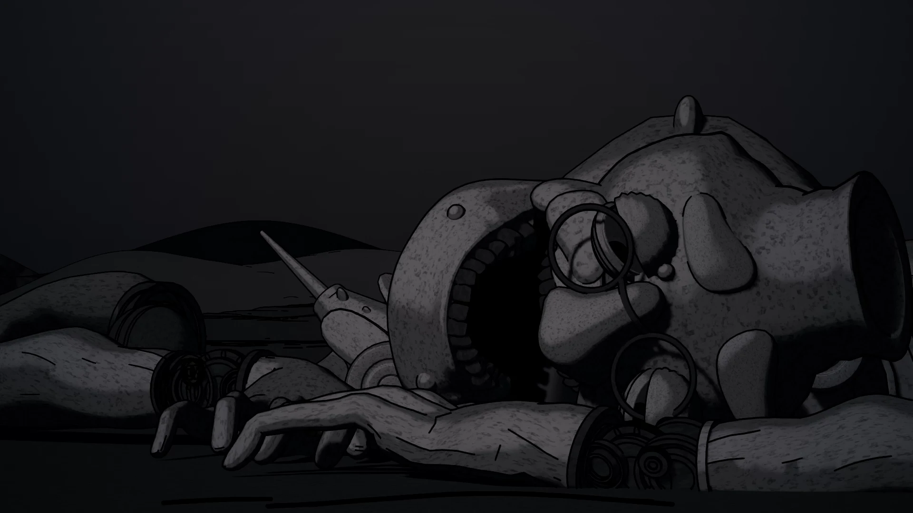
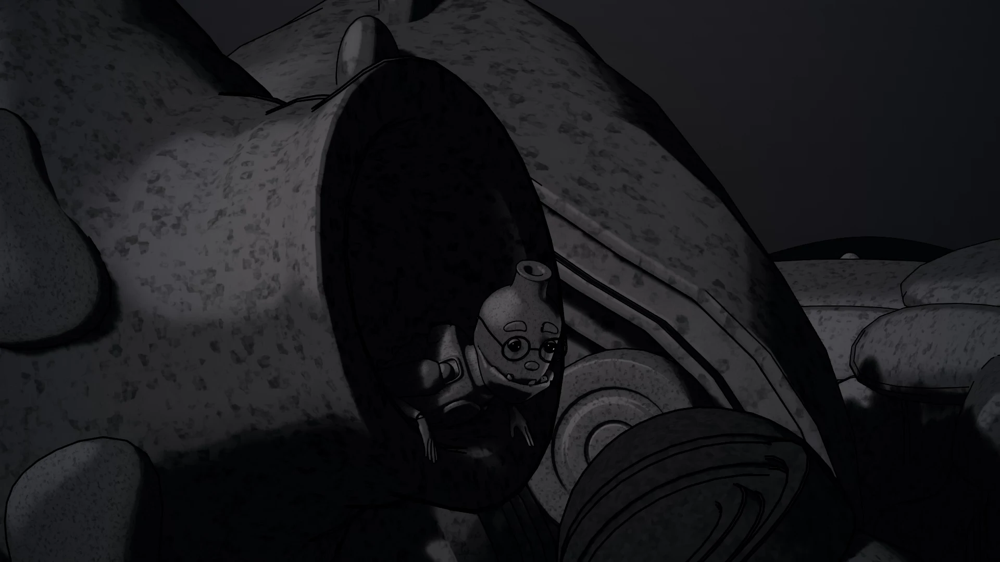
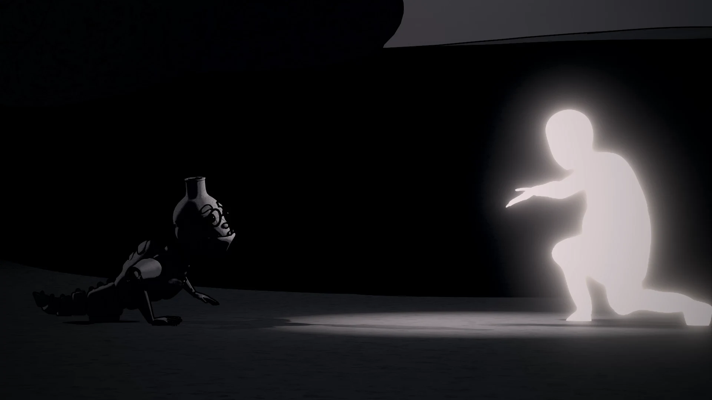
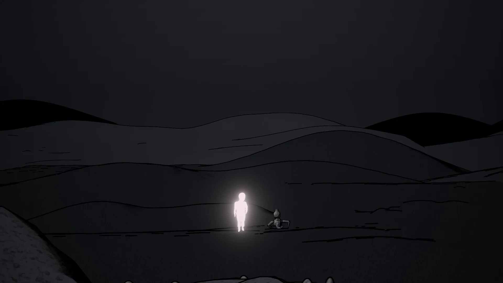

-dementia-
여정 / What remains
2025 / Single-channel video, color, sound / 1920 x 1080 (px), 02’ 17”
2025 / Single-channel video, color, sound / 1920 x 1080 (px), 02’ 17”
할머니와의 반복된 통화 속에서 기억의 소실은 단순한 망각이 아니라,
이미 지나온 순간으로 되돌아가는 시간의 루프처럼 느껴졌다.
애니메이션 속 로봇은 머릿속에서 기억을 꺼내 연료처럼 소비하며 앞으로 나아간다.
기억은 곧 생명의 에너지이며, 과거의 경험이 삶의 방향과 목적을 제공한다.
이 기억은 빛으로 시각화되었다.
밝을 때는 선명하지만 점차 사라지는 모습은 기억의 본질을 닮아 있다.
영상의 전체적인 채도는 희미하고 낡은 시간성을 표현하지만,
기억만은 따뜻하고 생생한 빛으로 그려져 생명력을 상징한다.
마지막 장면에서 로봇은 모든 기억을 소진한 뒤 붕괴하고, 그 안에서 어린 시절의 자아가 걸어나와 지나온 길을 역행한다. 이는 시간의 단방향적 흐름이 뒤집히는 순간이며, 기억의 끝이 새로운 시작이 될 수 있음을 암시한다.
이 작업은 비극과 희극 사이에 머문다. 치매는 분명 고통스럽지만, 나는 그것을 순수로의 회귀로도 보았다. 작품은 해답을 주기보다 관객에게 “이 로봇은 슬픈가, 아니면 행복할 수도 있는가?”라는 질문을 남긴다.
궁극적으로 What remains는 죽음이 아니라 기억의 순환과 재생의 가능성을 다룬다.
but begins with a perception of time’s structure.
Through repeated phone calls with my grandmother, I felt that her illness was not only about memory loss, but also about time itself looping back, as though she were returning to moments already lived.
This idea shaped the behavior of the robot in the animation. The robot extracts memories from its head and consumes them as fuel to move forward. Memories become the very energy of life, the past experiences that give us purpose and direction.
I visualized them as light. Vivid when bright, but gradually fading, mirroring the nature of memory. While the overall palette of the work is muted and faltering to evoke the sense of aged time, memories appear as warm and vivid light, embodying vitality.
In the final scene, the robot collapses after exhausting its memories, and a childlike self emerges to walk back along its path. This symbolizes a reversal of time’s one-way flow, suggesting that the end of memory can also be a new beginning.
I wanted the work to remain between tragedy and comedy. Dementia is undeniably painful, yet I chose to view it as a return to innocence. Rather than providing answers, the piece leaves the audience with a question “Is this robot sorrowful, or could it be happy?”
Ultimately, Journey is not about death, but about the circulation of memory and the possibility of rebirth.









←